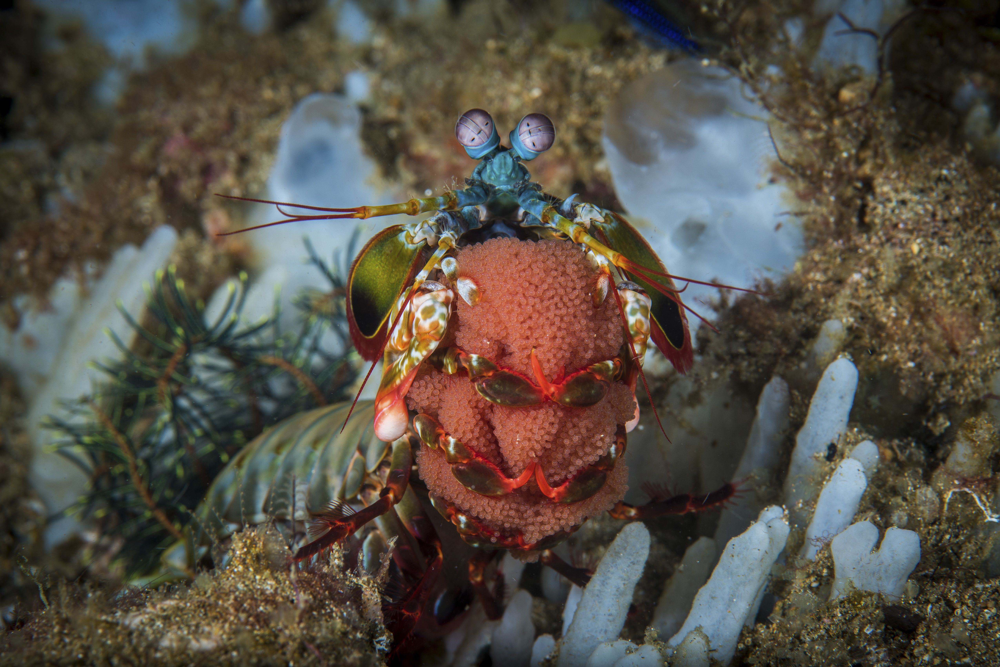

Fatos sobre o Stomatopoda
A lacraia do mar
O Stomatopoda chamdo cientificamente de Odontodactylus scyllarus vem de uma ordem de crustáceos marinhos. Um fato curioso é a visão dessa lacráia do mar é muito apurada capaz de captar o espctro ultravioleta e infravermelho. O tamanho delas pode variar de alguns poucos milimetros e chegar até cm em alhumas espécies que são maiores.
Esses animais são espalhados pelas costas dos mares tropicais e subtropicais, inclusive são encontrados em quase todo o litoral do Brasil. Eles vivem em local lodoso ou arenoso, cavam seus buracos ou aproveitam os buracos feitos e abndonados por outros animais. Essa espécie é unicamente carnivora, se alimeta de carangueijos, moluscos, camarões, peixes ou outros deles mesmo.
Visão
Como destacado acima a visão do Stomatopoda é potente e complexa, até mais do que a visão das borboletas. Nós humanos temos três tipos de fotorreceptores enquanto os olhos do camarão mantis têm entre 12 e 16 tipos de células fotorreceptoras.

Ciclo de vida e de reprodução
Em média, um camarão mantis vive 20 anos. Durante sua vida útil, pode produzir 20 a 30 vezes. Em algumas espécies, a única interacção entre machos e fêmeas ocorre durante o acasalamento. A fêmea deposita os ovos, quer na sua toca ou transporta-los ao redor com ela. Após a eclosão, descendentes passar três meses como zooplâncton antes de muda em sua forma adulta.
Caça e Dieta
O animal mata por desdobramento rapidamente as suas garras raptorial com uma espantosa aceleração de 102,000 m / s2 e velocidade de 23 mps (51 mph). A greve é tão rápido que ferve água entre o camarão e sua presa, produzindo bolhas de cavitação. Quando as bolhas de colapso, as visitas de ondas de choque resultantes presa com uma força instantânea de 1500 Newtons . Assim, mesmo se o camarão erra o alvo, a onda de choque pode atordoar ou matá-lo.